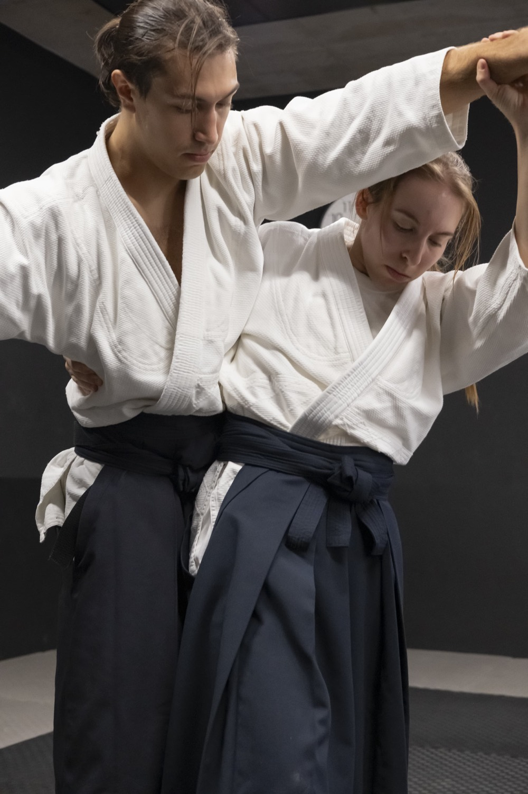
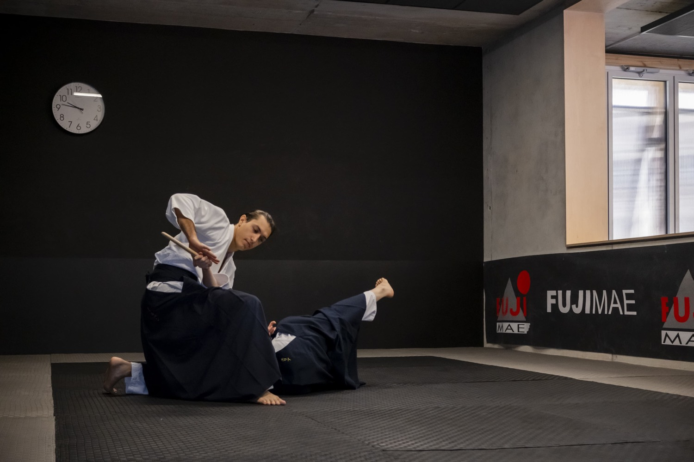
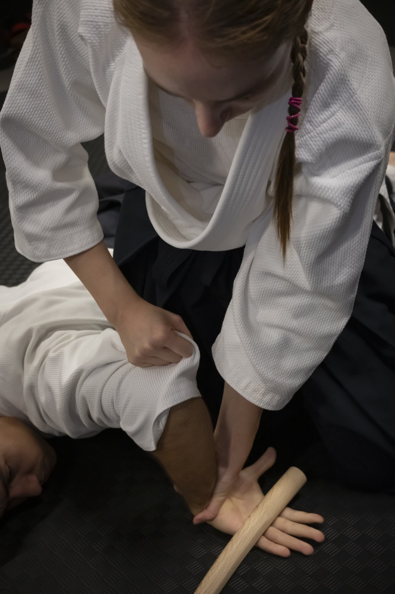
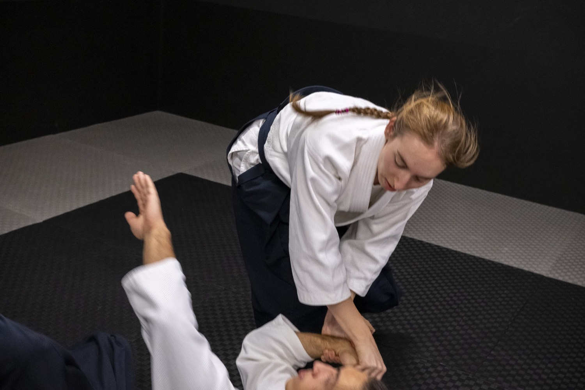
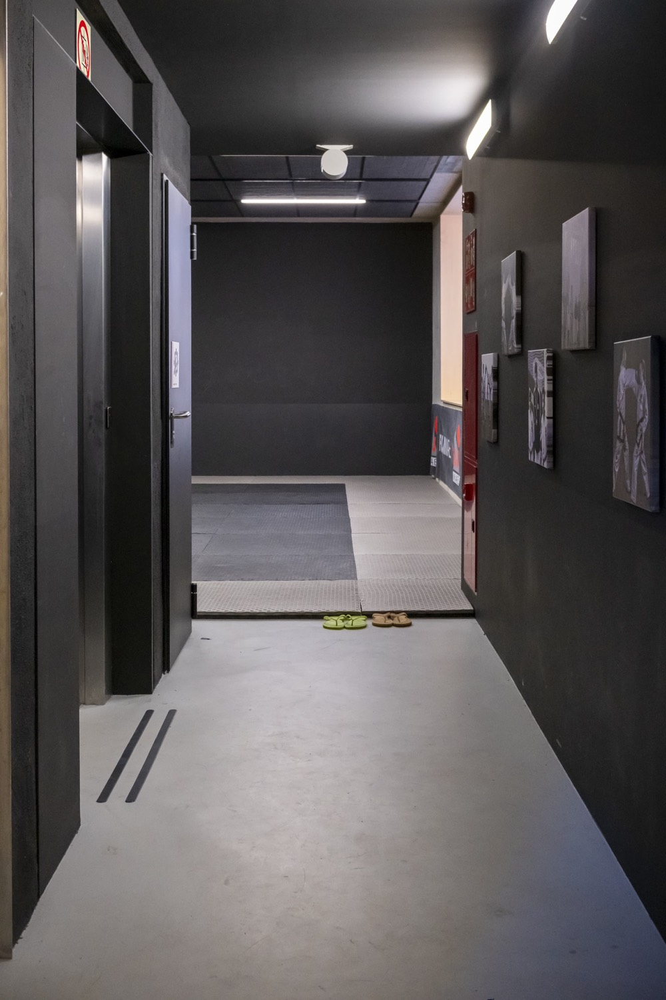

Barcelona · Complejo Deportivo Municipal Espronceda
Aikido en el CxEM Espronceda
Lunes y miércoles de 20:00 a 21:00, en la sala de tatami del complejo deportivo. Sin experiencia previa y sin competición.
Ven a probar Ver el horario Dos clases de prueba · inscripción gratuita
Inicio Aikido en Barcelona CxEM Espronceda
Lo esencial
Lo esencial
- Dónde
- CxEM Espronceda, C/ Espronceda, 326, 08027 Barcelona. En la sala de tatami del complejo.
- Cuándo
- Lunes y miércoles, de 20:00 a 21:00.
- Para quién
- Adultos y jóvenes desde 12 años, con o sin experiencia previa.
- Cuánto
- 39 € al mes, o 19 € si eres abonado del CxEM Espronceda. Inscripción gratuita y dos clases de prueba.
- Qué llevar
- Ropa cómoda de manga y pantalón largos. El keikogi no hace falta para empezar.
- Quién enseña
- Daniil Mikhaylov (3.er dan).
- Quién lo organiza
- Aikido Musubi, asociación cultural sin ánimo de lucro fundada en 2008. Formamos parte de Aikido Arashi Group, reconocido por la Aikikai Foundation (Hombu Dojo, Tokio).
Cuotas
Lo que cuesta, sin letra pequeña
Cuota general
- Adultos
- 39 €al mes
- Menores de 12 años
- 29 €al mes
Cuota para abonados del CxEM Espronceda
- Adultos
- 19 €al mes
- Menores de 12 años
- 9 €al mes
- Abonados: la cuota reducida es para quien ya tiene el abono del Complejo Deportivo Municipal Espronceda; basta con enseñarlo al apuntarse.
- Sin coste: la inscripción y las dos clases de prueba.
- Aparte: la licencia federativa y el seguro deportivo, por confirmar si pasan a estar incluidos.
- Acceso a otros espacios: por confirmar.
Cómo empezar
Tu primera clase, paso a paso
01
Escríbenos
Un correo o un WhatsApp. Te decimos qué día viene mejor y quién te va a recibir.
02
Ven quince minutos antes
La sala está dentro del complejo: entra por la calle de Espronceda y pregunta por la sala de tatami.
03
Ropa cómoda y nada más
Manga larga, pantalón largo y pies descalzos. Una hora, y nadie te va a poner a prueba el primer día.
Horario
Las clases en el CxEM Espronceda
| Cuándo | Nivel | Quién |
|---|---|---|
| Lun · Mié20:00–21:00 | Aikido · Todos los niveles | Daniil Mikhaylov3.er dan |
El espacio por dentro
CxEM Espronceda, por dentro





Cómo llegar
Cómo llegar y cómo entrar
Complejo Deportivo Municipal Espronceda
C/ Espronceda, 326 · 08027 Barcelona
Cómo se entra: por la entrada principal de la calle de Espronceda. La sala de tatami está dentro del complejo; la primera vez, ven con tiempo.
Quién enseña
El instructor
Daniil Mikhaylov, 3.er dan Aikikai, lleva la clase del CxEM Espronceda. Se formó en Aikido Musubi y sigue la línea del Aikikai Hombu Dojo de Tokio, con el mismo programa y los mismos exámenes que el dojo de Badalona.
Dudas
Preguntas sobre este espacio
¿Tengo que ser abonado del CxEM Espronceda?
No. Cualquiera puede apuntarse con la cuota general. Si ya tienes el abono del complejo, pagas la cuota de abonados.
¿Cómo encuentro la sala?
Entra por la entrada principal de la calle de Espronceda y pregunta por la sala de tatami. Arriba tienes una foto del pasillo que lleva a ella y, en la página de acceso, el plano con la entrada marcada.
¿En qué se diferencia de la clase de la Universidad de Barcelona?
La de la UB es la clase de principiantes, a las 19:00 y con Pablo Martín. La del CxEM Espronceda es para todos los niveles, a las 20:00 y con Daniil Mikhaylov. Mismo programa y mismos exámenes.
¿Puedo entrenar también en Badalona o en la UB?
Sí, puedes venir a probar a cualquiera de los espacios. Si la cuota da acceso a todos ellos está por confirmar.
¿Necesito experiencia previa?
No. Quien empieza entrena junto a quien lleva años, y en aikido no hay competición.
Y también